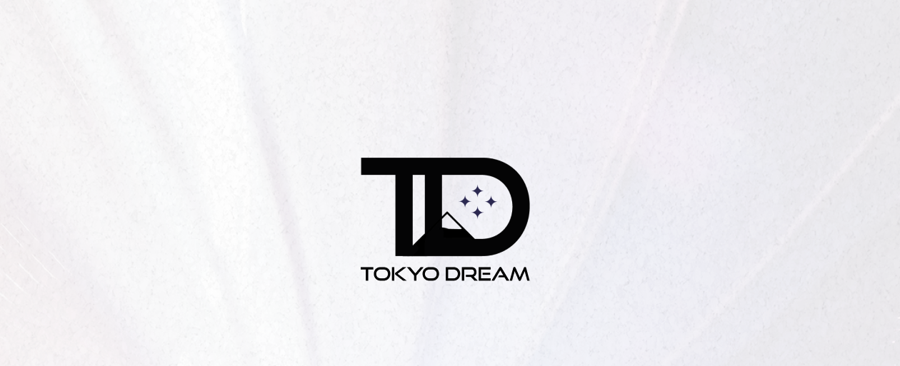

User Experience Design
Tokyo Dream
A website concept for a fictional hotel in Tokyo, designed to communicate atmosphere, comfort and a clear booking-oriented user experience.

Overview
Tokyo Dream was created in the User Experience Design module. The assignment was to design a clickable website concept for a fictional hotel and present its key qualities through a clear and visually engaging interface. The hotel was supposed to have unique characteristics that would distinct it from other hotels and make it an interesting project to work on.
{kind=link}
{kind=link}
Approach
I chose to create a website for a modern, expensive hotel, that values digitaliziation and an international kitchen. It is supposed to be accessible, comfortable and a bit luxurious. To attract different types of customers, the hotel also offers a variety of room types and events, the most unusual being "gaming events". The Webdesign as well as the user experience aspects of the website are designed to reflect the clean modern and luxurious atmosphere of the hotel.
Overview Layout